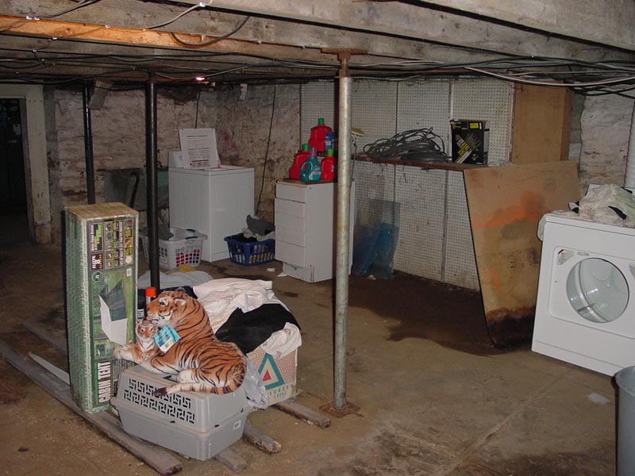

|  |
|
As we enter the Great Hall, our eyes are greeted with the veritable buffet of pleasing aspects in the layout, decor and design. This is an old farmhouse, and as such the floor features hand-poured and non-level cement, the ceiling is at the airy height of 5'8" or so. The decor is strongly typed with cobwebs and dim lighting. Spaciously placed around the room are floor-jacks to support the hundred-years-old hand cut floor beams. Noted in the decor is that items are stored up on boards and bricks for the inevitable seasonal flooding and puddling of water in a porous and natural stone basement. Once such is can be seen in the center background. Tastefully featured in the pile in the foreground is a brand-new and unboxed, amber monochrome monitor. Additional decoration feature piles of laundry being washed, and used wiring, plexiglass, and detergent bottles. [ Look left at the shelves | Look left towards the workbench | Archway to the lesser hall | What's back by the washer? | What's with all the detergent? | Look Right to by the Dryer | Turn around and look at why the step is wobbly | Head up the stairs and leave ] |